internals demonstrated through a simple implementation
1. explain language model fundamentals
2. walk though the architecture of our simple model
3. discuss limitations and contrast with real LLMs
4. take a brief look at the implementation
5. play with inputs and see some funny outputs
get ready for some rhymes...
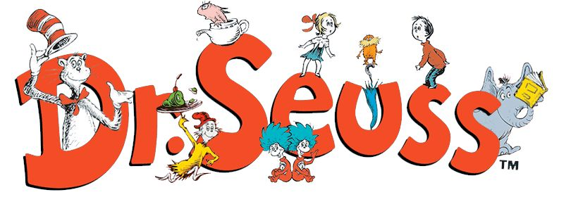
token
= some string, can be a full word, multiple words, part of a word, punctuation, etc.
vocab = all the available tokens the model "understands" and can output
parameter = some numerical value stored by our model, parameter count is roughly analogous total storage size
context = some number of tokens which are used as the model input to generate more tokens
logit = raw (un-normalized) model "score" for each vocab word given some context
softmax = function which turns logit values into usable probabilities
loss = how wrong the model is when calculating probabilities
sampling = randomly choosing an option within a probability distribution
temperature = the "steepness" of the probability distribution
training = repeatedly adjusting parameters in order to reduce loss
vocab = all the available tokens the model "understands" and can output
parameter = some numerical value stored by our model, parameter count is roughly analogous total storage size
context = some number of tokens which are used as the model input to generate more tokens
logit = raw (un-normalized) model "score" for each vocab word given some context
softmax = function which turns logit values into usable probabilities
loss = how wrong the model is when calculating probabilities
sampling = randomly choosing an option within a probability distribution
temperature = the "steepness" of the probability distribution
training = repeatedly adjusting parameters in order to reduce loss
what does a language model even do?
at their core, language models are token prediction engines
given some context, they calculate the probability of any given token coming next
this is achieved by attaching numeric values to tokens which "encode a semantic meaning"
given some context, they calculate the probability of any given token coming next
this is achieved by attaching numeric values to tokens which "encode a semantic meaning"
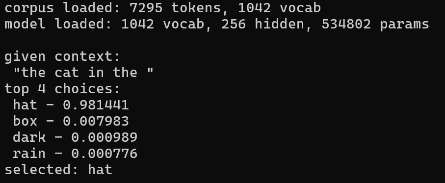
(sample output probabilities in our model)
embeddings
= a list of values for each token which give it "meaning" to the model
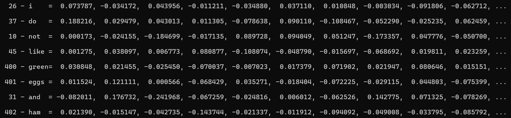
(actual first 10 items in sample embedding vectors)
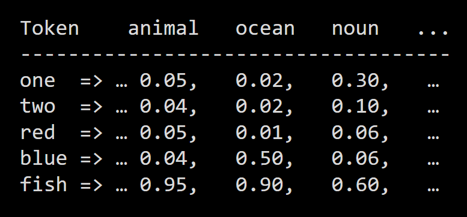
(abstract idea of what embedding vectors might represent)
note:
the model does not label embedding dimensions and dimensions dont neccessarily have human meaning.
however, in well trained models, similar tokens will have very similar embedding values,
this shows us that within these vectors, meaning is being captured
this results in the interesting property that we can "do algebra on words"
however, in well trained models, similar tokens will have very similar embedding values,
this shows us that within these vectors, meaning is being captured
this results in the interesting property that we can "do algebra on words"
"mean" + "christmas" ~= "grinch"
Generation
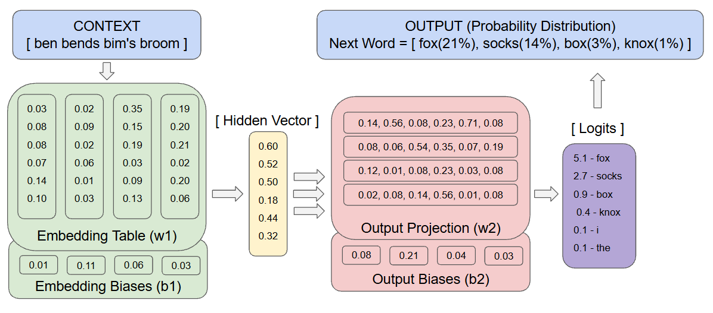
our model begins with a few tokens of context, we add each one's embedding vector to produce a hidden representation
for the full vocabulary, we apply a dot product with the hidden vector, this produces logits
logits are passed through the softmax function to convert to probabilities
we sample from that distribution in order to choose the next word
Training
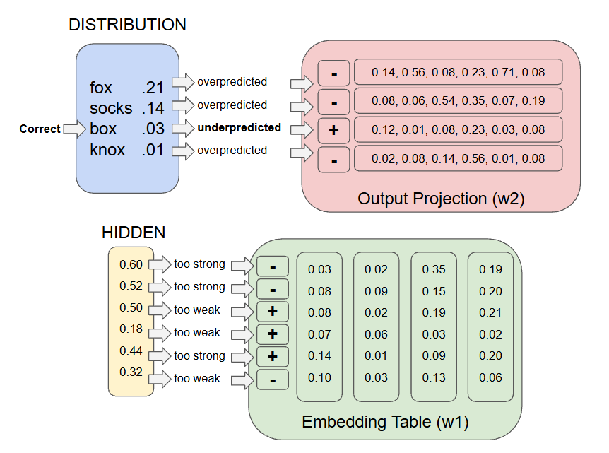
to train, we follow nearly the same process but we use the probability output to adjust our model
we pick a random position in the training corpus and attempt to predict the next token
the correct one is known and in a perfectly trained model its probability would be 1 while all other are 0
we find the difference and use it to increase the weight for the correct word and decrease the others
this update is propogated back through the model and the input embeddings are adjusted as well
repeat a million times and predictions steadily get better and better
sample error / iteration:
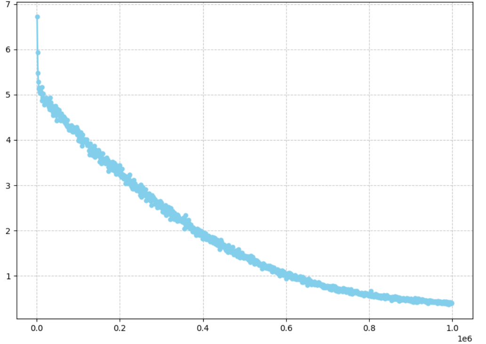
our model is tiny and limited so while our math is sound, we have not created GPT...
"they would feast feast feast feast feast feast feast feast feast feast feast feast feast..." - model
short term memory only - predictions are based on only recent tokens, the model cannot stay on task or maintain a theme
word order doesnt matter - in a context, embeddings are summed regardless of position, "hop on pop" = "pop on hop"
common words are too common - common words and phrases have high bias and the model has no concept of "already said that"
model only learns basic patterns - at this scale our model is picking up correlations in text, not actual rules or facts
but despite its limitations, the model does learn basic structure and produces sensible text
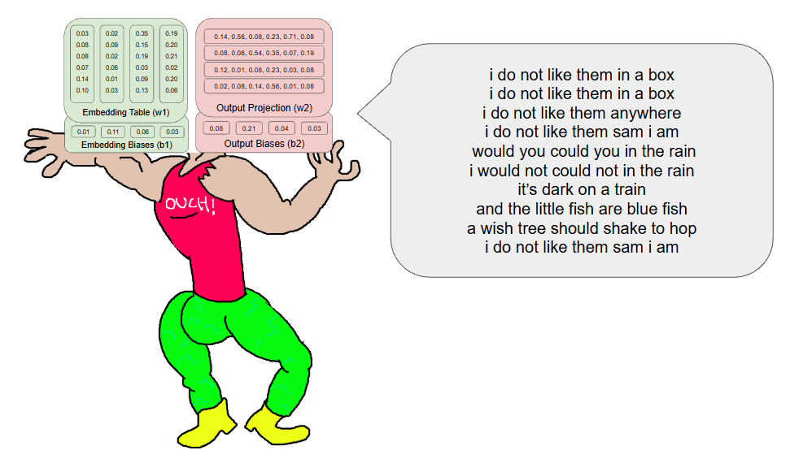
(no punctuation model with 8 token context trained to ~2m iterations)
conceptually not far at all! implementation wise, kinda far...
the innovation that powers modern LLMs is attention, a mechanism that allows the model to dynamically create and weight its context
models today also take advantage of numerous layers in order to create stronger more accurate relations
the training data and vocab size must scale massively, our model has a vocab of ~1k, GPT-2 has ~50k
to manage their scale real LLMs use transformers which allow for efficient matrix computations and parallelism
no key ideas change between our model and GPT, but the scale is not even comparable
GPT-4 is rumored to have over a trillion parameters, we have ~50k (20 million times smaller)
everything is written in C, using only standard libraries
they are all totally cross platform and need no linking
just run "
gcc train.c" or "gcc generate.c"Core Structures
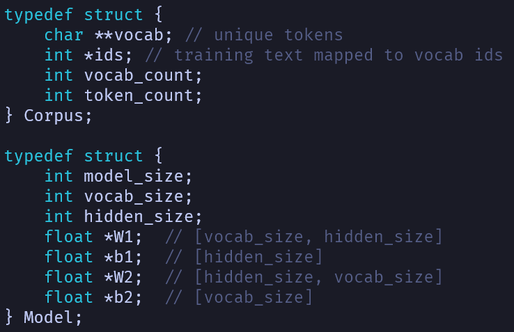
we initialize and save using the following functions:
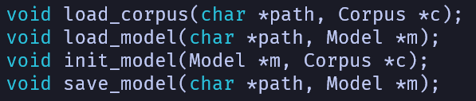
training and generation follow the same forward pass to produce probability distribution
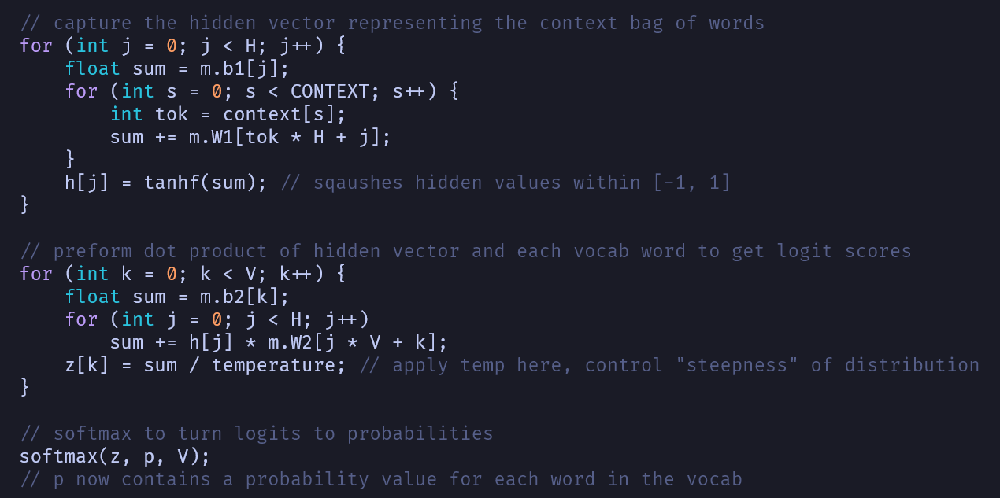
math notes:
tanh is a good function to bound hidden values since when features are very close to 1/-1, pushing them farther has little effect
tanh is a good function to bound hidden values since when features are very close to 1/-1, pushing them farther has little effect
softmax considers an entire list of values and proportionally converts them to probabilities (adding to exactly 1)
tanh
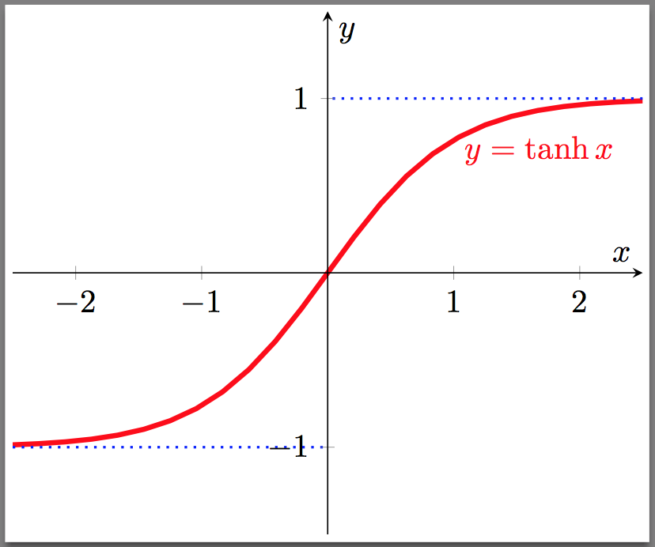
softmax
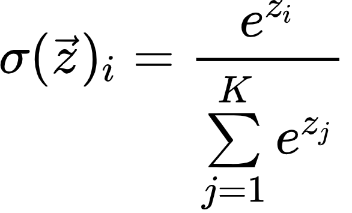
at this point, generation can just sample the distribution, update the context and move on
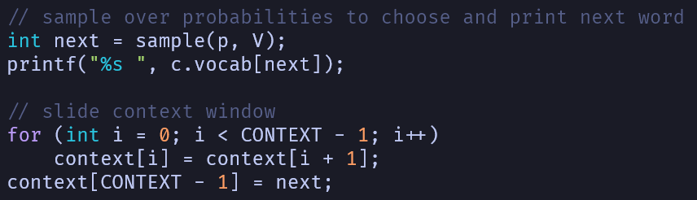
training must calculate loss, then attribute blame and update weights
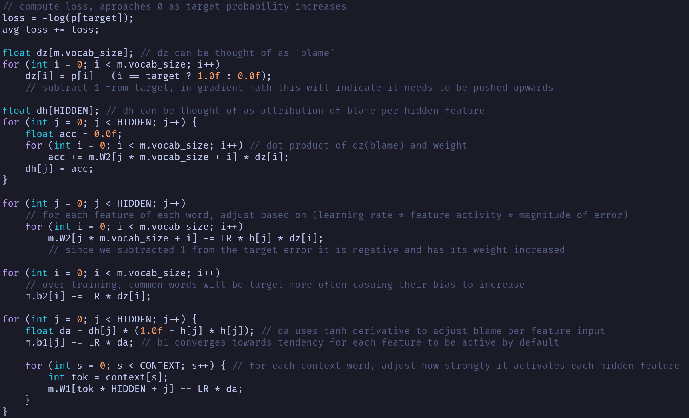
comments explain but, i highly recommend this resource from Stanford if you want to understand the calculus here
the cool thing about this implementation is that there are less than 500 lines of C between training, generation, and helpers
the point is to demonstrate the most basic machinery powering modern language models and show that there is no magic
to get outputs of your own, compile and run the training, then compile and run the generation.
adjust the constants for temperature, context, learning rate, steps, hidden size, or even the corpus text
many outputs will be complete and total nonsense, the following are a selection of unaltered examples...
the generation executable allows you to seed a context, i will tell you the seed and model details for each
1. 0.7 temperature, 4 token context, 1 million training steps, seed: "i do not like green eggs and ham"
i do not like them in a house and i will eat them in a box and i will eat them with a fox i will not eat them on a train not not in a car you let me be i would not could not in a car you let me be i do not like them sam you see not i like them here and they say i will don't choose to go there with your head full of brains and your shoes full of there tricks and i eat them run in a d tree not in a car you let
2. 0.4 temperature, 4 token context, 5 million training steps, seed: "oh the places you'll go"
oh the places you'll go by dr seuss congratulations today is your day your mountain is waiting so get on your way did you hear and a guy oh the places you'll go there is fun to be done there are points to be won and the magical things you can do with that ball will make you the winning est winner of all fame you'll be as famous as famous can be with the whole wide world watching you win on except except when you don't because sometimes you won't i'm sorry to say so but sadly it's true that bang ups and
3. 0.2 temperature, 4 token context, 1 million training steps, seed: "the cat in the"
the cat in the hat by dr seuss the sun did not shine it was too wet to play so we sat in the house all that cold cold wet day i sat there with sally we sat there we two and i said how i do you would not like them here or there i do not like them here or there i do not like them with a mouse i do not like them with a mouse i do not like them here or there i do not like them here or there i do not like them with a fox not
the following use an alternate tokenizer which allows for punctuation
4. 0.6 temperature, 8 token context, 1 million training steps, seed: "fox in socks"
sews in eat a a car box.
knox fox in the box socks. on
box hook. knox. the
in box box yellow. knox socks
box knox in box.
sue now. sews slow slow joe joe
crow whose clothes?
sews
you sue in sue joe box sue on.
slow sews
knox in box
sue sue socks. now sews of slow
slow
joe who
knox fox in the box socks. on
box hook. knox. the
in box box yellow. knox socks
box knox in box.
sue now. sews slow slow joe joe
crow whose clothes?
sews
you sue in sue joe box sue on.
slow sews
knox in box
sue sue socks. now sews of slow
slow
joe who
5. 0.9 temperature, 6 token context, 250k training steps, seed: "we like our bike"
on bricks chicks and chicks with clocks.
sir. mr. mr. brown brown brown
down came down with the a.
grinch lot of of who something bed new new.
things in socks
box socks on knox knox in. box
in a socks socks. fox on on
knox in in house a box.
i like to box box it.
how i can hold up you hold!
and a toy toy
little
sir. mr. mr. brown brown brown
down came down with the a.
grinch lot of of who something bed new new.
things in socks
box socks on knox knox in. box
in a socks socks. fox on on
knox in in house a box.
i like to box box it.
how i can hold up you hold!
and a toy toy
little
6. 0.5 temperature, 4 token context, untrained, seed: "the grinch's small heart grew three sizes that day"
as by am isn't bat picked boys seven high boat light max hump hold freeze lived
jumps sounded and freeze lay onward make whether? fifty claus lakes thread cindy-lou they'll show feet call hops again hop lie you're already merry slump caught whose cindy-lou fish? feel pets couldn't not walls deft mot afraid curls lie opener mountains hated hang bottle sam simple hold sleigh puzzler tricycles congratulations hello look isn't tame quarters smile run everywhere hop first another streets hello blocks play chew bottled horn whether best full hanging left caught win streets sits scarce bicycles mother hop
jumps sounded and freeze lay onward make whether? fifty claus lakes thread cindy-lou they'll show feet call hops again hop lie you're already merry slump caught whose cindy-lou fish? feel pets couldn't not walls deft mot afraid curls lie opener mountains hated hang bottle sam simple hold sleigh puzzler tricycles congratulations hello look isn't tame quarters smile run everywhere hop first another streets hello blocks play chew bottled horn whether best full hanging left caught win streets sits scarce bicycles mother hop
i hope this presentation clarifies some concepts and buzz around language models
all code and presentation materials are written by Ryan Alport
please reach out to Ralport2005@gmail.com with any questions at all!
embeddings - huggingface
"Attention Is All You Need" - Vaswani et al.
GPT-2 model card
Stanford CS231n - Deep Learning for Computer Vision
video - llm basics - 3b1b
video - implementing gpt - Andrej Karpathy
"A Tutorial on the Cross-Entropy Method" - Pieter-Tjerk de Boer